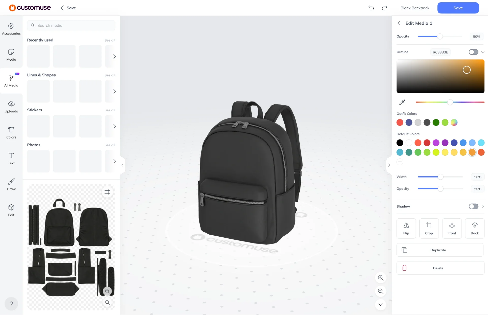

Customuse App Redesign
Customuse, London, 2023
Customuse is a platform that makes designing game items accessible to anyone, no matter their skill level.
Users can share their designs, explore and remix other user’s creations, and upload items to Roblox.

Web + mobile app redesign
I was tasked with redesigning the web and mobile editor apps from the ground up, adding improved features and streamlining the UX.
The challenge was to make powerful 3D tooling accessible to all skill levels, while delivering a consistent experience across both web and mobile.

Fitting the interface within the limited screen real estate of mobile was an interesting design challenge. Particularly, the canvas (texture editor) and 3D viewport competed for space.
I added a button that minimised the 3D view into the corner of the screen, giving the user more space to work on the canvas, while keeping sight of how it looked on the model.
Previously, models floated in space. I wrote a shader for a neutral ground plane to ground the model and provide a sense of space.
The ground shader used fresnel to fade out as the user panned the camera below the model. This avoids the jarring effect of the ground plane clipping through the camera.